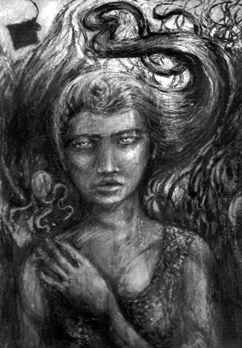

Jester-Knight
Literature
Film
Music
Visual Art
Tributes
Submissions
Links
Contact
Oliver & Claire Smith
Biography
Claire Smith was born in Hampshire, UK in 1977. She has an honours degree in English Studies and Modern Writing from The University of Gloucestershire, Cheltenham. She is currently employed by the University as a Research Assistant and is working on a publication on Modernism. She has been writing poetry since the age of 18, and also practices art and photography.
Oliver Smith, born 1966. Lives in Cheltenham, Gloucestershire, UK. Graduated in Fine Art Painting 1990, worked as Bookseller, Administrator, Cartographic Researcher and Local Government Officer while continuing to paint and exhibit part time; Art and Poetry on www.olly-smith.com; some short stories appear in Lands End published by the InkerMen Press.
Oliver Smith’s Artist Statement
My late art teacher, John Harwood, introduced me to the ideas of Andre Breton and the Surrealists: I have always been fascinated by the ability to see pictures in random shapes. In my paintings, I often use the “Rorschach Test” method of finding images, the mind ordering random marks on the canvas into a visually coherent narrative as seen in Max Ernst and early Pollock. Claire and I are experimenting with similar methods in poetry.
The poems Goodnight, Earthman and The Armadillo are a form of “exquisite corpse”—they are joint works initiated by each of us producing pieces of automatic writing. The initial stream of consciousness productions were exchanged for interpretation into the finished poetic forms.
Click below for some of Oliver & Claire's work

Alecto 2008 by Oliver Smith. Mixed media on paper.
Claire Smith Poems 2 (.pdf) NEW!!!
3 Poems (.pdf)
Rambling Roze (.pdf)
St George and the Cockatrice (.pdf)
Field of Flowers (.pdf)
Seven Sticks (.pdf)
Celebration (.pdf)
Claire Smith Poems (.pdf)
West Barrow Poems (.pdf)
Alecto (.pdf)
The Armadillo (.pdf)
Bats (.pdf)
Goodnight, Earthman. (.pdf)